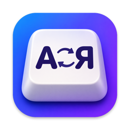

Раскладушка · Raskladushka
Автосмена раскладки для Mac · Keyboard layout auto-switcher for Mac
Политика конфиденциальности
Действует с 24 ноября 2026 г.
Раскладушка не собирает, не хранит и не передаёт никакие личные данные.
- Версия из Mac App Store не подключается к интернету: у неё нет сетевых прав. Версия, скачанная с GitHub, раз в день обращается к GitHub, чтобы узнать, не вышла ли новая версия; о вас при этом ничего не передаётся, а проверку можно отключить в настройках.
- Нажатия клавиш обрабатываются только в оперативной памяти вашего Mac, чтобы определить слово, набранное не в той раскладке. Они не записываются на диск и никуда не отправляются.
- Поля ввода паролей приложению недоступны.
- При переводе выделенного текста приложение на долю секунды использует буфер обмена и затем возвращает его прежнее содержимое.
- На вашем Mac хранятся настройки: состояние переключателей, сочетание клавиш, списки приложений-исключений и слов-исключений; числа в счётчике исправлений; слова, которые вы сами перевели сочетанием клавиш (по ним приложение учится исправлять их автоматически, это можно отключить). Всё это удаляется вместе с приложением.
- Журнал последних замен хранится только в оперативной памяти и пропадает при выходе из приложения.
- Если включено проговаривание исправлений, речь синтезируется на вашем Mac; текст никуда не передаётся.
- Разрешение «Универсальный доступ» необязательно. Оно нужно, чтобы перепечатать слово в окне, где вы набираете текст; содержимое чужих окон приложение не читает. Без разрешения работает перевод выделенного текста через системное меню «Службы».
- В приложении нет рекламы и аналитики.
Вопросы: xopycaku@gmail.com
Privacy Policy
Effective November 24, 2026
Raskladushka does not collect, store or transmit any personal data.
- The Mac App Store version never connects to the internet: it has no network entitlement. The version downloaded from GitHub contacts GitHub once a day to see whether a new version is available; nothing about you is sent, and the check can be turned off in Settings.
- Keystrokes are processed only in your Mac’s memory to detect a word typed in the wrong keyboard layout. They are never written to disk or sent anywhere.
- Password fields are not accessible to the app.
- When converting selected text, the app briefly uses the clipboard and then restores its previous contents.
- Stored on your Mac: settings (feature switches, the keyboard shortcut, the lists of excluded apps and excluded words); the numbers of the correction counter; words you converted yourself with the shortcut (the app learns to correct them automatically; this can be turned off). All of it is removed together with the app.
- The log of recent corrections is kept only in memory and is gone when the app quits.
- If spoken corrections are turned on, speech is synthesized on your Mac; the text is not sent anywhere.
- The Accessibility permission is optional. It is needed to retype a word in the window you are typing in; the app does not read the contents of other apps’ windows. Without the permission you can still convert selected text through the system Services menu.
- The app contains no ads or analytics.
Questions: xopycaku@gmail.com